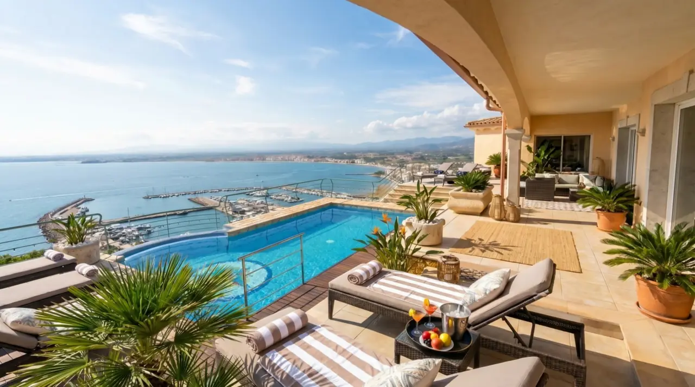

Roses · Costa Brava · Spain
Three bedrooms. Panoramic sea views. One unforgettable week with the whole family.
3 bedroomsPanoramic sea viewsSleeps 8 guestsPrivate pool, jacuzzi & saunaFrom €1,300 per night
The House
Villa Victoria was our family home for many years. When we moved back to our home country, we decided to open it to other families — so they could make the same kind of memories we did. High on the hillside above Roses, with the whole bay laid out below.
Villa Victoria is at Carrer de la Pujada del Puig Rom 85, Roses, 17480 Catalonia, Spain — a five-minute drive above the town centre and its beaches.
The Area
Our friends who come fall in love with the place because it offers so many different things — the hikers hike, the sailors sail, the kids end up in the water.
A ten-minute drive down the hill, the bay of Roses turns into a gentle classroom. Kids learn to sail, paddleboard, and kayak with instructors who have been teaching local children for two decades.
Charter a half-day on the water and drop anchor in the coves of Cap de Creus — places that can only be reached from the sea. Lunch on board, swim off the stern.
A local captain takes small groups out at first light. The kids remember the first fish they pull in more clearly than anything else from the week.
The Cap de Creus marine reserve is one of the Mediterranean’s best-kept diving secrets. Caves, swim-throughs, and reliable visibility of 15+ metres.
The coastal paths of the Cap de Creus national park start ten minutes from the front door. Short loops through olive groves, or full-day walks along the cliffs to hidden coves.
Cadaqués, where Dalí painted. Figueres, where he lived. Girona’s old town. Besalú’s medieval bridge. Collioure over the border in France. All within an hour.
Long family beaches with showers and chiringuitos, or tiny rocky calas you reach on foot. Platja de l’Almadrava is the closest — five minutes down the hill.
The Via Verda del Ferro i del Carbó cycling path runs through the Empordà plain. Flat, shaded, ending at a winery if you time it right.
Empordà Golf and Peralada Golf Club are both within a 20-minute drive. Mediterranean greens, sea breezes, and a forgiving welcome for mixed-level groups.
The Empordà is quietly one of Spain’s great food regions. The Roca brothers in Girona. Compartir in Cadaqués. Village restaurants where the fish was swimming at lunchtime.
Driving times from the villa: Cadaqués 25 minutes, Figueres 30 minutes, Girona 1 hour, Barcelona 1 hour 45 minutes.
Enquire directly
Hi, I’m Piotr — the eldest son of the owners of Villa Victoria. I’d be truly happy to help you plan the perfect stay. Whatever you need before or during your trip, I’m here to make sure this becomes the best vacation of your life.
€1,300per night · whole villa · 7-night minimum
The fastest way to check a specific week — message me on WhatsApp. I usually reply within the hour, unless I’m in the pool.
Guest Reviews
“Villa Victoria was perfect for our family of five. Our teenagers greatly enjoyed the hammock, and we all made great use of the beautiful pool and enjoyed the stunning views. The kitchen was well organized and stocked. We appreciated the location high on the hillside but still close enough to drive quickly into the center of town.”
“Beautiful property. Was close to everything, you can walk to town if needed. We really enjoyed the incredible views, comfortable beds and beautiful property. We will be back!”
“An incredible view of the bay makes this an exceptional place for a holiday. You can look down on the sea, and out across the mountains, from the pool and the hot tub, while also enjoying beautiful sunsets. The house itself has great modern appliances and a beautiful kitchen. There is really no reason to leave this house during a relaxing holiday, but Roses is just a 5 minute drive down the hill with lots of restaurants and shops. A great corner of the world.”
“The villa is beautiful. My family and I had an amazing time playing in the pool, sipping drinks on the terrace and admiring the breathtaking views. Everything we could think of was already taken care of. I cannot recommend staying here highly enough.”
“Quality and hospitality above and beyond expectations. Unforgettable view on Roses Bay.”
“An incredible place; everything from the house to the garden and the view creates a sense of harmony. The owners have meticulously cared for every detail. The bedrooms are enormous, the beds comfortable, the bathrooms luxurious. A swimming pool, jacuzzi, and sauna — all with sea views. Peace and quiet, no curious neighbors. In short, paradise on earth.”
“A wonderful view, you can look down on Roses. Comfortable apartments, a wonderful terrace, full of sun. A swimming pool with views of the port, town, beach, and mountains.”
“Very beautiful and nice place. The hosts’ family is very friendly.”
“Nice way to spend your vacation in such a nice house. Very recommended.”
Frequently asked
Seven nights. We found that a week is just the right amount of time for a family to really settle in — you have enough time to explore the area, and enough time to do absolutely nothing.
Up to eight guests across three bedrooms. Two rooms each have a king bed; the third has a king bed plus a sofa bed. Every bedroom has its own full bathroom.
€1,300 per night for the whole villa — so €9,100 for a standard 7-night stay. No per-person charges; the price is the same whether you’re a couple or a family of eight.
High on the hillside above the town of Roses, in Catalonia, Spain — on the Costa Brava, roughly 1h 45 from Barcelona and 30 minutes from the French border.
The easiest way is to drive directly. If you’re flying in from another country, most guests fly into Barcelona and rent a car there.
Alternatively, you can take a train to Figueres, and from Figueres grab a bus, a taxi, or rent a car for the last 25 minutes to Roses.
Yes — this was our family home with three boys, and it’s built for families. Pool, garden with a hammock, home cinema, and a BBQ terrace. Roses town is a 5-minute drive for restaurants, ice cream, and the beach.
A fully equipped kitchen, three full bathrooms, private pool, jacuzzi with sea views, sauna, home cinema, BBQ terrace, garden, and panoramic views over the bay of Roses from nearly every room.
Send me a message on WhatsApp (+34 692 852 918), email (VillaVictoriaSpain@gmail.com), or give me a call. I’ll confirm the dates, share the booking details, and walk you through everything before you arrive.